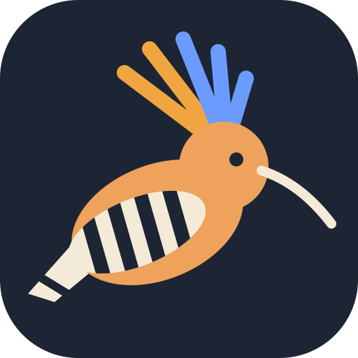

<!DOCTYPE html>
<html lang="fa" dir="rtl">
<head>
<meta charset="utf-8">
<meta name="viewport" content="width=device-width,initial-scale=1,viewport-fit=cover">
<title>Hopopo — شادوینگ روزانه</title>
<meta name="description" content="تمرین روزانهٔ شادوینگ انگلیسی و آلمانی از روی کتاب خودت">
<meta name="theme-color" content="#1d2433">
<link rel="manifest" href="manifest.webmanifest">
<link rel="icon" href="icons/icon.svg" type="image/svg+xml">
<link rel="apple-touch-icon" href="icons/apple-touch-icon.png">
<meta name="apple-mobile-web-app-capable" content="yes">
<meta name="mobile-web-app-capable" content="yes">
<meta name="apple-mobile-web-app-title" content="Hopopo">
<meta name="apple-mobile-web-app-status-bar-style" content="default">
<link rel="preconnect" href="https://fonts.googleapis.com">
<link rel="preconnect" href="https://fonts.gstatic.com" crossorigin>
<link href="https://fonts.googleapis.com/css2?family=Vazirmatn:wght@400;600;800&family=Literata:opsz,wght@7..72,400;7..72,600&display=swap" rel="stylesheet">
<style>
:root{
  --bg:#f6f3ee; --card:#fffdf9; --ink:#1d2433; --muted:#6b7080; --line:#e6e0d6;
  --en:#2f6fed; --de:#d9861a; --ok:#2e9d62; --danger:#c8423b;
  --radius:18px; --shadow:0 1px 2px rgba(29,36,51,.06),0 6px 24px rgba(29,36,51,.06);
}
@media (prefers-color-scheme:dark){
  :root{--bg:#12151c; --card:#1b1f29; --ink:#eef0f5; --muted:#9aa0ae; --line:#2b3140; --shadow:none; --en:#6b9bff; --de:#f0a640;}
}
*{box-sizing:border-box}
html,body{margin:0;background:var(--bg);color:var(--ink)}
body{font-family:Vazirmatn,system-ui,-apple-system,"Segoe UI",Tahoma,sans-serif;line-height:1.7;-webkit-tap-highlight-color:transparent;
  padding:env(safe-area-inset-top) env(safe-area-inset-right) env(safe-area-inset-bottom) env(safe-area-inset-left)}
#app{max-width:560px;margin:0 auto;padding:16px 16px 40px}
button,input,select,textarea{font:inherit;color:inherit}
button{cursor:pointer;border:0;background:none}
h1{font-size:1.6rem;margin:0;font-weight:800;letter-spacing:-.01em}
h2{font-size:1.2rem;margin:0}
h3{font-size:1rem;margin:0 0 10px}
.sub{margin:0;color:var(--muted);font-size:.9rem}
.top{display:flex;align-items:center;gap:10px;margin:8px 0 18px}
.card{background:var(--card);border:1px solid var(--line);border-radius:var(--radius);padding:16px;margin-bottom:14px;box-shadow:var(--shadow)}
.track{border-top:5px solid var(--acc)}
.trow{display:flex;justify-content:space-between;align-items:center}
.lang{display:flex;gap:12px;align-items:center}
.lang b{display:block;font-size:1.15rem}
.lang small{color:var(--muted)}
.code{width:46px;height:46px;border-radius:14px;background:var(--acc);color:#fff;display:grid;place-items:center;font-weight:800;font-family:Literata,serif;letter-spacing:.04em}
.streak{font-weight:800;font-size:1.05rem}
.book{margin:12px 0 6px;font-size:.95rem;overflow:hidden;text-overflow:ellipsis;white-space:nowrap}
.bar{height:8px;background:var(--line);border-radius:99px;overflow:hidden}
.bar i{display:block;height:100%;background:var(--acc);border-radius:99px}
.meta{display:flex;justify-content:space-between;font-size:.82rem;color:var(--muted);margin-top:4px}
.week{display:flex;gap:6px;margin:12px 0}
.week span{flex:1;text-align:center;font-size:.78rem;padding:4px 0;border-radius:10px;background:var(--bg);color:var(--muted);border:1px solid transparent}
.week span.on{background:var(--acc);color:#fff}
.week span.today{border-color:var(--acc)}
.btns{display:flex;flex-direction:column;gap:8px}
.primary{background:var(--acc,var(--ink));color:#fff;border-radius:14px;padding:13px 16px;font-weight:700;font-size:1rem;width:100%}
.primary:active{transform:scale(.99)}
.ghost{border:1px solid var(--line);border-radius:14px;padding:10px 16px;width:100%;color:var(--ink)}
.small{padding:8px 12px;border-radius:12px;font-size:.9rem;width:auto;white-space:nowrap}
.icon{width:40px;height:40px;border-radius:12px;display:grid;place-items:center;font-size:1.2rem;border:1px solid var(--line);background:var(--card)}
.note{font-size:.9rem}
.note p{margin:6px 0 10px;color:var(--muted)}
.foot{text-align:center;color:var(--muted);font-size:.85rem}
.bookitem{display:flex;gap:8px;align-items:center;margin-bottom:8px}
.bookitem>button:first-child{flex:1;text-align:right;border:1px solid var(--line);border-radius:14px;padding:10px 12px;background:var(--bg)}
.bookitem.active>button:first-child{border:2px solid var(--acc);background:var(--card)}
.bookitem small{display:block;color:var(--muted);font-size:.8rem}
.del.confirm{width:auto;padding:0 10px;font-size:.85rem;color:#fff;background:var(--danger);border-color:var(--danger)}
details.import{margin-top:6px}
details.import summary{cursor:pointer;font-weight:700;padding:8px 0;color:var(--acc)}
.file{display:block;border:2px dashed var(--line);border-radius:14px;padding:16px;text-align:center;color:var(--muted);cursor:pointer;margin:6px 0}
.file input{display:none}
.or{text-align:center;color:var(--muted);font-size:.85rem;margin:8px 0}
input[type=text],input[type=number],input[type=search],textarea,select{width:100%;border:1px solid var(--line);border-radius:12px;padding:10px 12px;background:var(--bg);margin-bottom:8px}
textarea{resize:vertical;font-family:Literata,serif}
.row{display:flex;gap:8px;align-items:center}
.row input{margin:0}
.row label{white-space:nowrap;font-size:.9rem}
.msg{font-size:.88rem;color:var(--muted);min-height:1em;margin-top:6px}
.msg.err{color:var(--danger)}
.preview{font-family:Literata,serif;background:var(--bg);border-radius:12px;padding:10px 12px;margin:0 0 10px;font-size:.95rem;text-align:left}
.results{margin:8px 0}
.res{display:block;width:100%;text-align:left;font-family:Literata,serif;font-size:.88rem;border-bottom:1px solid var(--line);padding:8px 4px}
.res em{font-style:normal;color:var(--muted);font-family:Vazirmatn,sans-serif;font-size:.78rem;float:right}
.field{margin-bottom:14px}
.field>span{display:flex;justify-content:space-between;font-size:.92rem;margin-bottom:4px}
.field>span output{font-weight:700;color:var(--acc)}
input[type=range]{width:100%;accent-color:var(--acc)}
.check{display:flex;gap:8px;align-items:center;font-size:.92rem}
.check input{width:20px;height:20px;accent-color:var(--acc)}
.hint{font-size:.84rem;color:var(--muted);background:var(--bg);border-radius:12px;padding:10px 12px;margin:6px 0 0}
.warn{color:var(--danger)}
/* session */
.session{display:flex;flex-direction:column;min-height:calc(100vh - 40px);min-height:calc(100dvh - 40px)}
.stop{display:flex;align-items:center;justify-content:space-between;gap:10px;margin:4px 0 12px}
.stitle{font-weight:700}
.timer{font-variant-numeric:tabular-nums;font-weight:700;color:var(--muted);font-size:.95rem}
.sbar{height:6px;background:var(--line);border-radius:99px;overflow:hidden;margin-bottom:16px}
.sbar i{display:block;height:100%;width:0;background:var(--acc);transition:width .3s}
.phase{border-radius:14px;padding:10px 14px;background:color-mix(in srgb,var(--acc) 12%,transparent);margin-bottom:10px}
.phase b{display:block;color:var(--acc);font-size:1.05rem}
.phase small{color:var(--muted)}
.counter{font-size:.82rem;color:var(--muted);margin-bottom:8px}
.textcard{flex:1;min-height:180px;background:var(--card);border:1px solid var(--line);border-radius:22px;padding:22px 20px;
  font-family:Literata,Georgia,serif;font-size:1.4rem;line-height:1.75;text-align:left;box-shadow:var(--shadow);display:flex;align-items:center;transition:filter .25s}
.textcard .tx{margin:0;width:100%}
.textcard.lvl-a{font-size:1.7rem}
.textcard .w{border-radius:6px;padding:0 1px;transition:background .12s,color .12s;cursor:pointer}
.textcard .w.hl{background:var(--acc);color:#fff}
.textcard.blind:not(.peek){filter:blur(9px);user-select:none}
.textcard.blind:not(.peek)::after{content:""}
.textcard .w.ok{color:var(--ok);font-weight:600}
.textcard .w.close{color:var(--de);font-weight:600;text-decoration:underline dotted}
.textcard .w.bad{color:var(--danger);font-weight:600;text-decoration:underline wavy}
.heard{min-height:1.6em;margin-top:8px;font-size:.92rem;text-align:center}
.heard .lbl{color:var(--muted)}
.heard .txt{font-family:Literata,serif;direction:ltr;unicode-bidi:isolate}
.score{display:inline-block;border-radius:99px;padding:0 10px;color:#fff;font-weight:700;margin-inline-start:6px}
.listening{animation:pulse 1s infinite}
@keyframes pulse{50%{opacity:.45}}
.gap{visibility:hidden;margin:12px 0 0;text-align:center;font-weight:700;color:var(--acc)}
.gap.on{visibility:visible}
.gapbar{height:6px;background:var(--line);border-radius:99px;overflow:hidden;margin-bottom:6px}
.gapbar i{display:block;height:100%;width:100%;background:var(--acc)}
.controls{display:flex;justify-content:center;align-items:center;gap:14px;margin:18px 0 10px}
.icon.big{width:54px;height:54px;border-radius:50%;font-size:1.25rem}
.play{width:76px;height:76px;border-radius:50%;background:var(--acc);color:#fff;font-size:1.8rem;display:grid;place-items:center;box-shadow:0 6px 20px color-mix(in srgb,var(--acc) 40%,transparent)}
.tools{display:flex;flex-wrap:wrap;gap:8px;justify-content:center}
.chip{border:1px solid var(--line);border-radius:99px;padding:6px 14px;font-size:.88rem;background:var(--card);color:var(--ink);text-decoration:none}
.chip.rec{background:var(--danger);color:#fff;border-color:var(--danger)}
.hidden{display:none!important}
.lookup{position:fixed;left:16px;right:16px;bottom:calc(16px + env(safe-area-inset-bottom));max-width:528px;margin:0 auto;background:var(--card);border:1px solid var(--line);border-radius:18px;padding:14px;box-shadow:0 10px 40px rgba(0,0,0,.18);z-index:20}
.lookup .word{font-family:Literata,serif;font-size:1.3rem;font-weight:600;direction:ltr;text-align:left}
.lookup .links{display:flex;flex-wrap:wrap;gap:8px;margin-top:8px}
.overlay{position:fixed;inset:0;background:rgba(10,12,18,.45);display:grid;place-items:center;z-index:30;padding:20px}
.sheet{background:var(--card);border-radius:20px;padding:20px;max-width:400px;width:100%}
.sheet p{color:var(--muted);margin:6px 0 16px}
.sheet .btns{flex-direction:row}
.done{text-align:center;padding-top:40px}
.done .big{font-size:4rem;line-height:1}
.done h2{margin:12px 0 4px;font-size:1.4rem}
.stats{display:flex;gap:10px;margin:22px 0}
.stats div{flex:1;background:var(--card);border:1px solid var(--line);border-radius:16px;padding:12px}
.stats b{display:block;font-size:1.5rem;color:var(--acc)}
.stats small{color:var(--muted)}
.picks{margin-top:12px;border:2px solid var(--acc);border-radius:16px;padding:12px}
.pickhead{font-weight:700;margin-bottom:8px}
.pickhead small{display:block;font-weight:400;color:var(--muted)}
.pick{display:flex;gap:10px;align-items:flex-start;padding:10px 0;border-top:1px solid var(--line)}
.pick input{width:20px;height:20px;margin-top:4px;accent-color:var(--acc);flex:none}
.pick>div{flex:1;min-width:0}
.pick small{display:block;color:var(--muted);font-size:.82rem}
.badge{display:inline-block;font-size:.75rem;background:var(--acc);color:#fff;border-radius:99px;padding:0 8px}
.ptext{font-family:Literata,serif;font-size:.9rem;text-align:left;background:var(--bg);border-radius:10px;padding:8px 10px;margin-top:6px;max-height:180px;overflow:auto}
.picks .primary{margin-top:10px}
.btnrow{display:flex;gap:8px;flex-wrap:wrap}
.toast{position:fixed;left:50%;transform:translateX(-50%);bottom:calc(24px + env(safe-area-inset-bottom));background:var(--ink);color:var(--bg);padding:10px 16px;border-radius:14px;font-size:.9rem;z-index:40;max-width:90%;text-align:center;opacity:0;transition:opacity .2s;pointer-events:none}
.toast.on{opacity:1}
</style>
</head>
<body>
<div id="app"></div>
<div id="toast" class="toast"></div>
<script>
'use strict';
/* ---------- constants ---------- */
const LANGS = {
  en:{name:'English', fa:'انگلیسی', code:'en-US', prefix:'en', wps:2.6, flag:'EN', color:'var(--en)'},
  de:{name:'Deutsch', fa:'آلمانی',  code:'de-DE', prefix:'de', wps:2.2, flag:'DE', color:'var(--de)'}
};
// phase types: listen | echo (listen, then repeat in the gap) | shadow (speak along) ; blind = text hidden
const PROFILES = {
  A1:{maxWords:8,  phases:[{t:'listen',r:.7},{t:'echo',r:.7},{t:'echo',r:.8},{t:'shadow',r:.8},{t:'shadow',r:.85}], finalRate:.8},
  A2:{maxWords:10, phases:[{t:'listen',r:.8},{t:'echo',r:.8},{t:'shadow',r:.85},{t:'shadow',r:.9}], finalRate:.85},
  B1:{maxWords:15, phases:[{t:'listen',r:.9},{t:'echo',r:.9},{t:'shadow',r:.95},{t:'shadow',r:.95,blind:true}], finalRate:.95},
  B2:{maxWords:22, phases:[{t:'listen',r:1},{t:'shadow',r:1},{t:'shadow',r:1.05,blind:true}], finalRate:1},
  C1:{maxWords:30, phases:[{t:'listen',r:1.05},{t:'shadow',r:1.05},{t:'shadow',r:1.1,blind:true}], finalRate:1.05}
};
const PHASE_TXT = {
  listen:['فقط گوش بده','به آهنگ، تکیه و مکث‌های جمله دقت کن.'],
  echo:['گوش بده، بعد تکرار کن','وقتی صدا تمام شد، همان جمله را بلند و با همان آهنگ بگو.'],
  shadow:['همزمان بخوان','هم‌زمان با صدا (یا نیم‌ثانیه پشتش) بلند بخوان.'],
  blind:['شادوینگ بدون متن','متن پنهان است؛ فقط با گوش دنبال کن. برای دیدن، روی کارت بزن.'],
  check:['گوش بده، بعد بگو','بعد از صدا جمله را بلند بگو. کلمه‌های درست سبز، تقریباً درست نارنجی و اشتباه یا جاافتاده قرمز می‌شوند.'],
  final:['شادوینگ پیوسته','کل متن امروز پشت سر هم پخش می‌شود؛ بدون توقف همراهش بخوان.'],
  review:['مرور جلسهٔ قبل','گرم کردن با آخرین جمله‌های دفعهٔ پیش؛ همزمان بخوان.']
};
const WD = ['ی','د','س','چ','پ','ج','ش'];
const PDFJS = 'lib/pdf.min.js';
const PDFJS_WORKER = 'lib/pdf.worker.min.js';
const JSZIP = 'lib/jszip.min.js';

const SAMPLES = {
  de:{title:'نمونه: Mein Tag (A1)', text:
`Ich heiße Lena. Ich bin dreißig Jahre alt. Ich wohne in Hamburg. Meine Wohnung ist klein, aber hell.

Am Morgen stehe ich um sieben Uhr auf. Ich trinke einen Kaffee und esse ein Brötchen. Dann fahre ich mit dem Bus zur Arbeit. Ich arbeite in einem Büro. Meine Kollegen sind nett.

Um zwölf Uhr esse ich mit Tom zu Mittag. Tom kommt aus Spanien. Er spricht gut Deutsch. Am Nachmittag habe ich viele Termine. Um fünf Uhr gehe ich nach Hause.

Am Abend koche ich gern. Heute koche ich Nudeln mit Tomatensoße. Dann lese ich ein Buch, oder ich sehe fern.

Am Wochenende besuche ich meine Eltern. Sie wohnen in einem Dorf. Dort ist es sehr ruhig. Wir gehen zusammen spazieren. Ich bin gern bei meinen Eltern.`},
  en:{title:'Sample: The Quiet Power of Small Habits (B2)', text:
`Most people imagine that big changes require big decisions. In reality, the habits that shape our lives are usually small, almost invisible actions repeated day after day.

Consider someone who wants to become fluent in a new language. Spending an entire weekend memorising vocabulary might feel productive, but the knowledge tends to fade within a week. On the other hand, fifteen minutes of focused practice every morning builds a foundation that keeps growing.

The secret is not intensity but consistency. When an activity becomes part of your routine, it stops depending on motivation. You no longer have to negotiate with yourself every time you sit down to practise.

Researchers who study learning often point out that the brain strengthens the connections it uses most frequently. In other words, repetition is not boring busywork; it is how skills become automatic.

Of course, a habit only works if it is realistic. If you set a goal that requires two hours a day, you will probably give up as soon as life gets busy. It is far better to choose something so manageable that you can do it even on your worst day.

Over months, those modest sessions add up to hundreds of hours of practice. Looking back, you may be surprised by how far you have travelled, one small step at a time.`}
};

/* ---------- helpers ---------- */
let view='home', curLang=null;
const app = document.getElementById('app');
const $ = s => document.querySelector(s);
const esc = s => String(s).replace(/[&<>"']/g, c => ({'&':'&amp;','<':'&lt;','>':'&gt;','"':'&quot;',"'":'&#39;'}[c]));
const fa = n => Number(n).toLocaleString('fa-IR');
const wc = s => s.split(/\s+/).filter(Boolean).length;
const pad = n => String(n).padStart(2,'0');
const mmss = sec => { sec=Math.max(0,Math.round(sec)); return `${pad(Math.floor(sec/60))}:${pad(sec%60)}`; };
function dayKey(d=new Date()){ return `${d.getFullYear()}-${pad(d.getMonth()+1)}-${pad(d.getDate())}`; }
let toastT;
function toast(msg, ms=3200){ const t=$('#toast'); t.textContent=msg; t.classList.add('on'); clearTimeout(toastT); toastT=setTimeout(()=>t.classList.remove('on'), ms); }

/* ---------- storage ---------- */
const LS_KEY = 'shadowing.v1';
function defTrack(lang){
  const id = 'sample-'+lang;
  return {lang, level: lang==='en'?'B2':'A1', minutes: lang==='en'?15:12, speed:1, voiceURI:'', warmup:true, check:true, checkReps:2,
    bookId:id, books:{[id]:{title:SAMPLES[lang].title, pos:0, total:0, last:null, sample:true}}, history:[]};
}
function loadState(){
  try{
    const j = JSON.parse(localStorage.getItem(LS_KEY));
    if(j && j.tracks){ for(const k of ['en','de']) j.tracks[k] = Object.assign(defTrack(k), j.tracks[k]); return j; }
  }catch(e){}
  return {tracks:{en:defTrack('en'), de:defTrack('de')}};
}
let S = loadState();
function save(){ try{ localStorage.setItem(LS_KEY, JSON.stringify(S)); }catch(e){} }

const DB = (()=>{
  let dbp; const mem = new Map();
  function open(){
    if(dbp) return dbp;
    dbp = new Promise((res,rej)=>{
      try{ const r = indexedDB.open('shadowing',1);
        r.onupgradeneeded = ()=> r.result.createObjectStore('books');
        r.onsuccess = ()=> res(r.result); r.onerror = ()=> rej(r.error);
      }catch(e){ rej(e); }
    });
    return dbp;
  }
  async function get(k){
    if(mem.has(k)) return mem.get(k);
    try{ const db=await open(); const v = await new Promise((res,rej)=>{ const q=db.transaction('books').objectStore('books').get(k); q.onsuccess=()=>res(q.result); q.onerror=()=>rej(q.error); }); if(v) mem.set(k,v); return v; }
    catch(e){ return undefined; }
  }
  async function put(k,v){ mem.set(k,v); try{ const db=await open(); await new Promise((res,rej)=>{ const tx=db.transaction('books','readwrite'); tx.objectStore('books').put(v,k); tx.oncomplete=res; tx.onerror=()=>rej(tx.error); }); }catch(e){} }
  async function del(k){ mem.delete(k); try{ const db=await open(); await new Promise(res=>{ const tx=db.transaction('books','readwrite'); tx.objectStore('books').delete(k); tx.oncomplete=res; tx.onerror=res; }); }catch(e){} }
  return {get,put,del};
})();

/* ---------- text processing ---------- */
function normalize(raw){
  const t = raw.replace(/\r/g,'').replace(/­/g,'').replace(/(\p{L})-\n\s*(\p{Ll})/gu,'$1$2');
  const paras=[]; let cur=[];
  const flush=()=>{ if(cur.length) paras.push(cur.join(' ')); cur=[]; };
  for(const raw of t.split('\n')){
    const l = raw.replace(/\s+/g,' ').trim();
    if(!l){ flush(); continue; }
    if(/^[\dIVXLCivxlc.\-–—\s]+$/.test(l)) continue;           // page numbers
    if(wc(l)<=5 && !/[.!?…:;,"”»«)]$/.test(l)){ flush(); continue; } // headings / labels
    cur.push(l);
  }
  flush();
  return paras;
}
function splitSentences(paras, lang){
  const seg = (typeof Intl!=='undefined' && Intl.Segmenter) ? new Intl.Segmenter(lang,{granularity:'sentence'}) : null;
  const out=[];
  for(const p of paras){
    const parts = seg ? [...seg.segment(p)].map(x=>x.segment) : (p.match(/[^.!?…]+[.!?…]+["'»«“”)]*\s*|[^.!?…]+$/g) || [p]);
    for(const s of parts){ const x=s.trim(); if(x && /\p{L}/u.test(x)) out.push(x); }
  }
  return out;
}
function textToSentences(raw, lang){ return splitSentences(normalize(raw), lang); }

function chunkSentence(s, maxW){
  if(wc(s)<=maxW) return [s];
  let parts = s.replace(/([,;:–—])\s+/g,'$1\u0001').split('\u0001');
  const conj = /\s+(?=(?:and|but|because|which|who|that|when|while|although|so|if|und|aber|weil|dass|wenn|denn|oder|sondern|als|damit|obwohl)\s)/i;
  parts = parts.flatMap(p => wc(p)>maxW ? p.split(conj) : [p]);
  parts = parts.flatMap(p=>{
    const w=p.split(/\s+/).filter(Boolean); if(w.length<=maxW) return [p];
    const n=Math.ceil(w.length/maxW), size=Math.ceil(w.length/n), r=[];
    for(let i=0;i<w.length;i+=size) r.push(w.slice(i,i+size).join(' '));
    return r;
  });
  const out=[];
  for(const p of parts.map(x=>x.trim()).filter(Boolean)){
    const last=out[out.length-1];
    if(last && (wc(p)<3 || wc(last)<3) && wc(last)+wc(p)<=maxW+2) out[out.length-1]=last+' '+p; else out.push(p);
  }
  return out;
}
function phasesFor(t){
  const prof=PROFILES[t.level];
  if(!t.check) return prof.phases;
  const n=Math.max(1, Math.min(3, t.checkReps||2));
  const ref=prof.phases.find(p=>p.t==='echo') || prof.phases.find(p=>p.t==='listen');
  const checks=Array.from({length:n}, (_,i)=>({t:'check', r:ref.r, n:i+1, of:n}));
  return [...prof.phases.filter(p=>p.t==='listen'), ...checks, ...prof.phases.filter(p=>p.t==='shadow')];
}
function estDur(text, rate, lang){ return wc(text)/(LANGS[lang].wps*rate) + 0.5; }
function stepTime(text, t, rate, lang){ const d=estDur(text,rate,lang); return (t==='echo' ? d*2.25+1 : t==='check' ? d*2.6+3.5 : d) + 0.6; }

/* ---------- books ---------- */
const bookCache = new Map();
async function getBook(lang, id){
  if(bookCache.has(id)) return bookCache.get(id);
  let b;
  if(id.startsWith('sample-')) b = {id, lang, sentences:textToSentences(SAMPLES[lang].text, lang)};
  else b = await DB.get('book:'+id);
  if(b){ bookCache.set(id,b); const m=S.tracks[lang].books[id]; if(m && m.total!==b.sentences.length){ m.total=b.sentences.length; save(); } }
  return b;
}
for(const l of ['en','de']){ const id='sample-'+l; if(S.tracks[l].books[id]) getBook(l,id); }

async function importBook(lang, title, raw, appendId){
  return importSentences(lang, title, textToSentences(raw, lang), appendId);
}
async function importSentences(lang, title, sentences, appendId){
  if(appendId && sentences.length){
    const book = await getBook(lang, appendId), meta = S.tracks[lang].books[appendId];
    if(book && meta){ book.sentences = book.sentences.concat(sentences); await DB.put('book:'+appendId, book); meta.total = book.sentences.length; save(); return sentences.length; }
  }
  if(sentences.length < 3) throw new Error('متن قابل‌استفاده‌ای پیدا نشد. اگر PDF اسکن‌شده (عکس) است، متنش قابل خواندن نیست.');
  const id = 'b'+Date.now().toString(36);
  await DB.put('book:'+id, {id, lang, title, sentences});
  bookCache.set(id, {id, lang, title, sentences});
  const t=S.tracks[lang];
  t.books[id] = {title, pos:0, total:sentences.length, last:null};
  t.bookId = id; save();
  return sentences.length;
}
function loadScript(src){ return new Promise((res,rej)=>{ const s=document.createElement('script'); s.src=src; s.onload=res; s.onerror=()=>rej(new Error('بارگذاری کتابخانه ناموفق بود (اینترنت را چک کن).')); document.head.appendChild(s); }); }
async function openPdf(file){
  if(!window.pdfjsLib){ await loadScript(PDFJS_WORKER); await loadScript(PDFJS); }
  pdfjsLib.GlobalWorkerOptions.workerSrc = new URL(PDFJS_WORKER, location.href).href;
  return pdfjsLib.getDocument({data:new Uint8Array(await file.arrayBuffer()), isEvalSupported:false}).promise;
}
async function pdfToText(pdf, onProg){
  const pages=[];
  for(let p=1;p<=pdf.numPages;p++){
    const tc = await (await pdf.getPage(p)).getTextContent();
    const lines=[]; let line='', lastY=null, lastH=0, prevLineY=null;
    for(const it of tc.items){
      if(!('str' in it)) continue;
      const y=it.transform[5];
      if(lastY!==null && Math.abs(y-lastY)>2 && line.trim()){
        if(prevLineY!==null && Math.abs(prevLineY-lastY) > (lastH||10)*1.9) lines.push('');
        lines.push(line); prevLineY=lastY; line='';
      }
      line += it.str; lastY=y; lastH=it.height||lastH;
      if(it.hasEOL){ if(line.trim()){ lines.push(line); prevLineY=y; } line=''; }
    }
    if(line.trim()) lines.push(line);
    pages.push(lines.join('\n'));
    if(onProg) onProg(p, pdf.numPages);
  }
  return pages.join('\n');
}
function normPath(p){ const out=[]; for(const seg of p.split('/')){ if(seg==='..') out.pop(); else if(seg && seg!=='.') out.push(seg); } return out.join('/'); }
async function epubToText(file){
  if(!window.JSZip) await loadScript(JSZIP);
  const zip = await JSZip.loadAsync(file);
  const xml = s => new DOMParser().parseFromString(s,'application/xml');
  const opfPath = xml(await zip.file('META-INF/container.xml').async('string')).querySelector('rootfile').getAttribute('full-path');
  const opf = xml(await zip.file(opfPath).async('string'));
  const base = opfPath.includes('/') ? opfPath.slice(0, opfPath.lastIndexOf('/')+1) : '';
  const man={}; opf.querySelectorAll('manifest > item').forEach(i=>man[i.getAttribute('id')]=i.getAttribute('href'));
  const out=[];
  for(const ref of opf.querySelectorAll('spine > itemref')){
    const href=man[ref.getAttribute('idref')]; if(!href) continue;
    const f = zip.file(decodeURIComponent(normPath(base+href.split('#')[0]))); if(!f) continue;
    const doc = new DOMParser().parseFromString(await f.async('string'),'text/html');
    doc.querySelectorAll('script,style,h1,h2,h3,h4,h5,h6').forEach(n=>n.remove());
    const blocks=[...doc.body.querySelectorAll('p,li,blockquote,dd,div')].filter(el=>!el.querySelector('p,li,div,blockquote'));
    out.push(blocks.map(b=>b.textContent.replace(/\s+/g,' ').trim()).filter(Boolean).join('\n\n'));
  }
  return out.join('\n\n');
}

/* ---------- OCR (runs on the device; engine + German/English data ship with the app) ---------- */
let ocrWorker=null, ocrCode=null, ocrCancel=false, ocrLog=null;
async function getOcr(lang){
  const code = lang==='de' ? 'deu' : 'eng';
  if(ocrWorker && ocrCode===code) return ocrWorker;
  if(ocrWorker){ try{ await ocrWorker.terminate(); }catch(e){} ocrWorker=null; }
  if(!window.Tesseract) await loadScript('ocr/tesseract.min.js');
  const abs = p => new URL(p, location.href).href;
  ocrWorker = await Tesseract.createWorker(code, 1, {
    workerPath:abs('ocr/worker-wrap.js'), corePath:abs('ocr/core'), langPath:abs('ocr/lang'),
    workerBlobURL:false, cacheMethod:'none', logger:m=>{ if(ocrLog) ocrLog(m); }
  });
  ocrCode=code; return ocrWorker;
}
async function imageCanvas(file){
  let img, w, h;
  try{ img = await createImageBitmap(file); w=img.width; h=img.height; }
  catch(e){
    img = await new Promise((res,rej)=>{ const im=new Image(); im.onload=()=>res(im); im.onerror=()=>rej(new Error(`عکس «${file.name}» باز نشد. اگر HEIC است، آن را JPG کن.`)); im.src=URL.createObjectURL(file); });
    w=img.naturalWidth; h=img.naturalHeight;
  }
  const sc=Math.min(1, 2400/Math.max(w,h)), c=document.createElement('canvas');
  c.width=Math.round(w*sc); c.height=Math.round(h*sc);
  const x=c.getContext('2d'); x.fillStyle='#fff'; x.fillRect(0,0,c.width,c.height); x.drawImage(img,0,0,c.width,c.height);
  return c;
}
async function pdfPageCanvas(page){
  const v1=page.getViewport({scale:1}), scale=Math.min(3, 2200/Math.max(v1.width,v1.height)), v=page.getViewport({scale});
  const c=document.createElement('canvas'); c.width=Math.round(v.width); c.height=Math.round(v.height);
  const x=c.getContext('2d'); x.fillStyle='#fff'; x.fillRect(0,0,c.width,c.height);
  await page.render({canvasContext:x, viewport:v}).promise; return c;
}
// sources: array of async () => canvas
async function runOcr(lang, sources, label){
  const msg=$('#impmsg'), stop=$('#ocrstop');
  msg.className='msg'; msg.textContent='در حال آماده‌سازی تشخیص متن (بار اول کمی طول می‌کشد)…';
  ocrCancel=false; if(stop) stop.classList.remove('hidden');
  const out=[]; let n=0;
  try{
    const w = await getOcr(lang);
    for(let i=0;i<sources.length;i++){
      if(ocrCancel) break;
      const lbl = label(i);
      ocrLog = m=>{ if(m.status==='recognizing text' && $('#impmsg')) $('#impmsg').textContent=`تشخیص متن: ${lbl} (${fa(i+1)} از ${fa(sources.length)}) — ${fa(Math.round(m.progress*100))}٪`; };
      if(msg.isConnected) msg.textContent=`تشخیص متن: ${lbl} (${fa(i+1)} از ${fa(sources.length)})`;
      const canvas = await sources[i]();
      const {data} = await w.recognize(canvas);
      out.push((data.text||'').trim()); n++;
    }
  } finally { ocrLog=null; if(stop) stop.classList.add('hidden'); }
  return {text:out.join('\n\n'), pages:n, cancelled:ocrCancel};
}
function showReview(text, title, pages, cancelled){
  const ta=$('#btext'), ti=$('#btitle'), msg=$('#impmsg');
  if(!ta) return;
  ta.value = (ta.value.trim() ? ta.value.trim()+'\n\n' : '') + text;
  if(!ti.value.trim()) ti.value=title;
  msg.className='msg';
  msg.textContent = `✓ متن ${fa(pages)} صفحه تشخیص داده شد${cancelled?' (متوقف شد)':''}. متن بالا را مرور کن، اشتباه‌ها و تیترها/تمرین‌های اضافه را پاک کن، بعد «افزودن متن» را بزن.`;
  ta.scrollIntoView({behavior:'smooth', block:'center'});
}

/* ---------- smart selection of shadowing material ---------- */
const TYPE_FA = {dialogue:'گفت‌وگو', reading:'متن خواندنی', phrases:'جمله‌های کاربردی', routine:'روتین روزانه'};
let sampleP=null, PICKS=null;
function getSample(){
  if(!sampleP) sampleP = (async()=>{ try{ if(!window.claude || typeof window.claude.use!=='function') return null; return (await window.claude.use('sample')) || null; }catch(e){ return null; } })();
  return sampleP;
}
function say(t, err){ const m=$('#impmsg'); if(m){ m.className = err ? 'msg err' : 'msg'; m.textContent=t; } }
function canvasBlob(c){
  const sc=Math.min(1, 1600/Math.max(c.width,c.height));
  let src=c; if(sc<1){ src=document.createElement('canvas'); src.width=Math.round(c.width*sc); src.height=Math.round(c.height*sc); src.getContext('2d').drawImage(c,0,0,src.width,src.height); }
  return new Promise(res=>src.toBlob(b=>res(b),'image/jpeg',0.85));
}
function smartPrompt(langName, level, mode){
  return `You are helping a Persian-speaking learner practise ${langName} with the shadowing method (listen and repeat aloud along with audio). Their level is ${level}.
Below ${mode==='images' ? 'are photos/scans of pages from one lesson of their textbook' : 'is the text of one lesson of their textbook, produced by OCR, so it may contain recognition errors'}.

Select ONLY the material worth shadowing:
- dialogues and conversations,
- reading texts, short stories, descriptions, emails/letters,
- blocks of useful everyday expressions (greetings, introducing yourself, asking for things, shopping, ordering, appointments…),
- texts about daily routines / everyday life.
Skip: exercise and task instructions (e.g. "Hören Sie", "Ergänzen Sie", "Complete", "Match"), gap-fill sentences, multiple choice, word lists, single words, grammar tables, headers, page numbers, captions without full sentences, answer keys.

Rules:
- Copy passages faithfully from the book. Fix only obvious OCR/scan errors. Never invent, translate or rewrite content.
- Remove speaker labels ("A:", "Anna:") and list numbering, but keep each spoken turn or phrase on its own line.
- Every line must be a full sentence ending with . ! or ? (add a final period to a phrase if missing).
${/A1|A2/.test(level) ? '- The learner is a beginner: prefer short, high-frequency, immediately useful sentences.\n' : ''}- Keep the book's order. At most 12 items.
- For each item: "type" = dialogue | reading | phrases | routine; "title" = short title in ${langName}; "note_fa" = one short Persian sentence saying what it is useful for; "text" = the lines joined with \\n.

Answer with JSON only: {"lesson": "lesson name/number if visible, else empty", "items": [{"type": "...", "title": "...", "note_fa": "...", "text": "..."}]}. If nothing is suitable, return an empty items array.`;
}
async function smartExtract({text, images, maxImgs}){
  const smp=await getSample(); if(!smp) throw new Error('unavailable');
  const t=S.tracks[curLang], L=LANGS[curLang];
  const ask = async (txt, imgs)=>{
    let prompt = smartPrompt(L.name, t.level, imgs ? 'images' : 'text');
    if(txt) prompt += `\n\n<lesson_text>\n${txt.slice(0,60000)}\n</lesson_text>`;
    const opts={modelTier:'default'}; if(imgs) opts.images=imgs;
    const v = await smp.json(prompt, opts);
    return (v && typeof v==='object') ? v : {};
  };
  let lesson='', items=[];
  if(images){
    for(let i=0;i<images.length;i+=maxImgs){
      say(`✨ Claude دارد صفحه‌ها را می‌خواند و متن‌های مفید را جدا می‌کند (${fa(Math.min(i+maxImgs,images.length))} از ${fa(images.length)})…`);
      const v=await ask('', images.slice(i,i+maxImgs)); if(!lesson && v.lesson) lesson=v.lesson; items=items.concat(Array.isArray(v.items)?v.items:[]);
    }
  } else {
    say('✨ Claude دارد متن‌های مفید برای شادوینگ را جدا می‌کند…');
    const v=await ask(text); lesson=v.lesson||''; items=Array.isArray(v.items)?v.items:[];
  }
  items = items.filter(x=>x && typeof x.text==='string' && x.text.trim());
  return {lesson:String(lesson||''), items, raw:text||''};
}
const EX_RE = /^(hören|lesen|schreiben|ergänzen|ergänze|markieren|kreuzen|ordnen|sprechen|spielen|sehen|wählen|verbinden|notieren|fragen|antworten|sortieren|unterstreichen|beschreiben|erzählen|machen sie|was passt|wer sagt|richtig oder falsch|listen|read|write|complete|match|fill|tick|circle|underline|answer|choose|work in|discuss|look at|ask and|talk about|exercise|übung)\b/i;
function heuristicPick(raw){
  const lines = raw.replace(/\r/g,'').split('\n').map(l=>l.replace(/^\s*(?:\d{1,2}[.)]?|[a-hA-H][.)]|[•●▪\-–])\s+/,'').replace(/^\s*[\p{Lu}][\p{L}.]{0,14}:\s+/u,''));
  const clean = lines.map(l=>{ const x=l.trim(); return (EX_RE.test(x) || /_{2,}|\.{4,}|…\s*…|\(\s*\)/.test(x)) ? '' : l; });
  const keep = normalize(clean.join('\n')).filter(p=>{
    if(wc(p)<3 || !/[.!?]["”»)]?$/.test(p)) return false;
    const toks=p.split(/\s+/); if(toks.filter(w=>/\d/.test(w)).length/toks.length>0.3) return false;
    return true;
  });
  return keep.length ? [{type:'reading', title:'Auswahl', note_fa:'انتخاب خودکار ساده؛ قبل از افزودن یک نگاه بینداز.', text:keep.join('\n')}] : [];
}
function showPicks(res, title){
  PICKS={...res, title};
  const box=$('#picks'); if(!box) return;
  if(!res.items.length){
    box.innerHTML=''; say('متن مناسبی برای شادوینگ پیدا نشد. متن کامل را در کادر پایین گذاشتم تا خودت انتخاب کنی.', true);
    if(res.raw) $('#btext').value=res.raw; return;
  }
  say('');
  box.innerHTML = `<div class="picks"><div class="pickhead">✨ ${fa(res.items.length)} متن مناسب شادوینگ پیدا شد${res.lesson?` — <bdi>${esc(res.lesson)}</bdi>`:''}
      ${res.heuristic?'<small>این انتخاب با فیلتر سادهٔ داخلی انجام شد. داخل Claude، خود Claude متن‌ها را دقیق‌تر انتخاب می‌کند.</small>':'<small>تیک هرکدام را که نمی‌خواهی بردار.</small>'}</div>
    ${res.items.map((it,i)=>`<label class="pick"><input type="checkbox" checked data-pick="${i}"><div><span class="badge">${TYPE_FA[it.type]||'متن'}</span> <b dir="ltr">${esc(it.title||'')}</b>${it.note_fa?`<small>${esc(it.note_fa)}</small>`:''}<div class="ptext" dir="ltr">${esc(it.text).replace(/\n/g,'<br>')}</div></div></label>`).join('')}
    <button class="primary" data-act="addpicks">افزودن متن‌های انتخاب‌شده</button>
    <div class="btnrow" style="margin-top:8px"><button class="ghost small" data-act="editpicks">ویرایش قبل از افزودن</button>${res.raw?'<button class="ghost small" data-act="rawtext">نمایش متن کامل</button>':''}</div></div>`;
  const ti=$('#btitle'); if(ti && !ti.value.trim()) ti.value = res.lesson || title;
  box.scrollIntoView({behavior:'smooth', block:'start'});
}
function pickedText(){
  return [...document.querySelectorAll('[data-pick]')].filter(c=>c.checked).map(c=>String(PICKS.items[+c.dataset.pick].text))
    .map(t=>t.split('\n').map(l=>l.trim()).filter(Boolean).map(l=>/[.!?…:;"”»)]$/.test(l)?l:l+'.').join('\n\n')).join('\n\n');
}
async function pickFromText(text, title){
  const smp = await getSample();
  if(smp){ try{ return showPicks(await smartExtract({text}), title); }catch(e){ if(e && e.code==='rate_limited') toast('Claude فعلاً مشغول است؛ از فیلتر داخلی استفاده شد.'); } }
  showPicks({lesson:'', items:heuristicPick(text), heuristic:true, raw:text}, title);
}
async function processPages(sources, label, title){
  const smp = await getSample(); let maxImgs=0;
  if(smp){ try{ const lim = smp.limits ? await smp.limits() : null; maxImgs = lim && lim.images ? (typeof lim.images==='number' ? Math.max(1,Math.min(lim.images,8)) : 6) : 0; }catch(e){} }
  if(maxImgs){
    try{
      const blobs=[];
      for(let i=0;i<sources.length;i++){ say(`آماده‌سازی ${label(i)} (${fa(i+1)} از ${fa(sources.length)})…`); blobs.push(await canvasBlob(await sources[i]())); }
      return showPicks(await smartExtract({images:blobs, maxImgs}), title);
    }catch(e){ /* fall back to on-device OCR */ }
  }
  const r = await runOcr(curLang, sources, label);
  return pickFromText(r.text, title);
}

/* ---------- shadowing packs: share prepared lessons with people who don't use Claude ---------- */
function parsePack(text){
  try{ const p=JSON.parse(text); if(p && p.format==='shadowing-pack' && LANGS[p.lang] && Array.isArray(p.sentences)) return p; }catch(e){}
  return null;
}
async function importPack(p){
  const sents=p.sentences.filter(x=>typeof x==='string' && x.trim()).map(x=>x.trim());
  if(!sents.length) throw new Error('این بسته خالی است.');
  const lang=p.lang, title=String(p.title||'بستهٔ شادوینگ');
  const ap=$('#append'); const appendId = (lang===curLang && ap && ap.checked) ? S.tracks[lang].bookId : null;
  const n=await importSentences(lang, title, sents, appendId);
  toast(`✓ «${title}» (${fa(n)} جمله) به ${LANGS[lang].fa} اضافه شد`, 4500);
  renderTrack(lang);
}
async function shareBook(id){
  const t=S.tracks[curLang], m=t.books[id], b=await getBook(curLang,id); if(!m||!b) return;
  const json=JSON.stringify({format:'shadowing-pack', version:1, lang:curLang, level:t.level, title:m.title, sentences:b.sentences});
  const fname=(m.title.replace(/[^\p{L}\p{N}]+/gu,'-').replace(/^-|-$/g,'').slice(0,40)||'lesson')+'.shadow.json';
  if(!isFramed){
    const file=new File([json], fname, {type:'application/json'});
    try{ if(navigator.canShare && navigator.canShare({files:[file]})){ await navigator.share({files:[file], title:m.title}); return; } }catch(e){ if(e && e.name==='AbortError') return; }
    const a=document.createElement('a'); a.href=URL.createObjectURL(file); a.download=fname; document.body.appendChild(a); a.click(); a.remove();
    toast('فایل بسته ذخیره شد؛ برای دوستت بفرست.', 4500); return;
  }
  try{ await navigator.clipboard.writeText(json); toast('بسته کپی شد. برای دوستت بفرست؛ او آن را در کادر متن اپ می‌چسباند و «افزودن همهٔ متن» را می‌زند.', 6500); }
  catch(e){ toast('کپی ممکن نشد.'); }
}

/* ---------- planning ---------- */
function buildPlan(t, meta, sentences){
  const prof = PROFILES[t.level], sp = t.speed, lang = t.lang, target = t.minutes*60;
  const chunks=[], steps=[]; let est=0;
  if(t.warmup && meta.last && meta.last[1]>meta.last[0] && meta.last[1]<=sentences.length){
    for(let s=Math.max(meta.last[0], meta.last[1]-2); s<meta.last[1]; s++){
      for(const c of chunkSentence(sentences[s], prof.maxWords)){
        const k=chunks.push({text:c, sent:s})-1;
        steps.push({k, sec:'review', ph:{t:'shadow', r:prof.finalRate*sp}}); est+=stepTime(c,'shadow',prof.finalRate*sp,lang);
      }
    }
  }
  const firstNew = chunks.length; let s = meta.pos;
  while(s < sentences.length){
    const cs = chunkSentence(sentences[s], prof.maxWords);
    let add=0;
    for(const c of cs){ for(const ph of phasesFor(t)) add+=stepTime(c,ph.t,ph.r*sp,lang); add+=stepTime(c,'shadow',prof.finalRate*sp,lang); }
    if(chunks.length>firstNew && est+add>target) break;
    est+=add; for(const c of cs) chunks.push({text:c, sent:s}); s++;
  }
  for(let k=firstNew;k<chunks.length;k++) for(const ph of phasesFor(t)) steps.push({k, sec:'main', ph:{...ph, r:ph.r*sp}});
  for(let k=firstNew;k<chunks.length;k++) steps.push({k, sec:'final', ph:{t:'shadow', r:prof.finalRate*sp}});
  return {chunks, steps, start:meta.pos, end:s, est, newCount:chunks.length-firstNew};
}

/* ---------- speech ---------- */
let VOICES=[];
function loadVoices(){ try{ VOICES = speechSynthesis.getVoices() || []; }catch(e){ VOICES=[]; } if(view==='track') refreshVoiceSelect(); }
if('speechSynthesis' in window){ loadVoices(); speechSynthesis.onvoiceschanged = loadVoices; }
const vlang = v => (v.lang||'').replace('_','-').toLowerCase();
function voicesFor(lang){ return VOICES.filter(v=>vlang(v).startsWith(LANGS[lang].prefix)); }
function voiceFor(t){
  const vs = voicesFor(t.lang); let v = vs.find(v=>v.voiceURI===t.voiceURI);
  if(!v){ const pref=LANGS[t.lang].code.toLowerCase();
    v = vs.find(v=>vlang(v)===pref && /enhanced|premium|natural|neural/i.test(v.name)) || vs.find(v=>vlang(v)===pref && /google/i.test(v.name)) || vs.find(v=>vlang(v)===pref) || vs[0]; }
  return v;
}
let curUtter=null;
function speak(text, rate, lang, onBoundary){
  return new Promise(res=>{
    if(!('speechSynthesis' in window)){ res(); return; }
    const u = new SpeechSynthesisUtterance(text);
    const v = voiceFor(S.tracks[lang]); if(v) u.voice=v;
    u.lang = v ? v.lang : LANGS[lang].code; u.rate = Math.max(.5, Math.min(1.6, rate));
    let done=false; const fin=()=>{ if(done) return; done=true; clearTimeout(to); res(); };
    const to = setTimeout(fin, (estDur(text,rate,lang)*2.5+4)*1000);
    u.onend=fin; u.onerror=fin; u.onboundary = e=>{ if(onBoundary && e.name!=='sentence') onBoundary(e.charIndex); };
    curUtter=u; speechSynthesis.speak(u);
  });
}
function unlockAudio(){ try{ speechSynthesis.cancel(); const u=new SpeechSynthesisUtterance(' '); u.volume=0; speechSynthesis.speak(u); }catch(e){} }

/* ---------- listening to the learner & checking ---------- */
const SR = window.SpeechRecognition || window.webkitSpeechRecognition;
const NUMS = {
  de:['null','eins','zwei','drei','vier','fünf','sechs','sieben','acht','neun','zehn','elf','zwölf','dreizehn','vierzehn','fünfzehn','sechzehn','siebzehn','achtzehn','neunzehn','zwanzig'],
  en:['zero','one','two','three','four','five','six','seven','eight','nine','ten','eleven','twelve','thirteen','fourteen','fifteen','sixteen','seventeen','eighteen','nineteen','twenty']
};
function fold(w, lang){
  let x=w.toLowerCase().normalize('NFC').replace(/[’']/g,"'").replace(/^[^\p{L}\p{N}']+|[^\p{L}\p{N}']+$/gu,'');
  if(/^\d+$/.test(x) && NUMS[lang][+x]) x=NUMS[lang][+x];
  return x.replace(/ß/g,'ss');
}
function lev(a,b){ const m=a.length,n=b.length; if(!m) return n; if(!n) return m; let prev=Array.from({length:n+1},(_,j)=>j);
  for(let i=1;i<=m;i++){ const cur=[i]; for(let j=1;j<=n;j++) cur[j]=Math.min(prev[j]+1, cur[j-1]+1, prev[j-1]+(a[i-1]===b[j-1]?0:1)); prev=cur; } return prev[n]; }
function wordSim(a,b){ if(a===b) return 1; const strip=s=>s.normalize('NFD').replace(/\p{M}/gu,''); if(strip(a)===strip(b)) return .9; return 1 - lev(a,b)/Math.max(a.length,b.length); }
// aligns what was heard against the target; returns a mark per target word: ok | close | bad
function scoreSpeech(target, heard, lang){
  const T=target.split(/\s+/).filter(Boolean), tw=T.map(w=>fold(w,lang)), hw=heard.split(/\s+/).map(w=>fold(w,lang)).filter(Boolean);
  const m=tw.length, n=hw.length, D=[], B=[];
  for(let i=0;i<=m;i++){ D[i]=[]; B[i]=[]; for(let j=0;j<=n;j++){
    if(!i&&!j){ D[0][0]=0; continue; }
    let best=Infinity, bk=null;
    if(i&&j){ const sim=wordSim(tw[i-1],hw[j-1]); const c=D[i-1][j-1]+(sim>=.99?0:sim>=.7?.4:1); if(c<best){best=c;bk='d';} }
    if(i){ const c=D[i-1][j]+1; if(c<best){best=c;bk='u';} }
    if(j){ const c=D[i][j-1]+.6; if(c<best){best=c;bk='l';} }
    D[i][j]=best; B[i][j]=bk; } }
  const marks=new Array(m).fill('bad'); let i=m, j=n;
  while(i>0||j>0){ const b=B[i][j];
    if(b==='d'){ const sim=wordSim(tw[i-1],hw[j-1]); marks[i-1]= sim>=.99?'ok': sim>=.7?'close':'bad'; i--; j--; }
    else if(b==='u'){ marks[i-1]='bad'; i--; } else j--; }
  const words=tw.map((w,k)=>w?marks[k]:'ok');
  const score = m ? Math.round(100*words.reduce((a,x)=>a+(x==='ok'?1:x==='close'?.6:0),0)/m) : 0;
  return {marks:words, score};
}
let srBlocked=false;
function listenOnce(lang, maxMs, tok, onLive){
  return new Promise(res=>{
    if(!SR || srBlocked){ res(null); return; }
    let r; try{ r=new SR(); }catch(e){ res(null); return; }
    r.lang=LANGS[lang].code; r.interimResults=true; r.continuous=false; r.maxAlternatives=1;
    let text='', done=false, err=null, heardAny=false;
    const finish=()=>{ if(done) return; done=true; clearTimeout(maxT); clearInterval(watch); try{ r.abort(); }catch(e){}
      if(err==='not-allowed' || err==='service-not-allowed'){ srBlocked=true; res(null); } else res(text.trim()); };
    r.onresult=e=>{ let t=''; for(let i=0;i<e.results.length;i++) t+=e.results[i][0].transcript+' '; text=t; heardAny=true; if(onLive) onLive(text.trim()); };
    r.onerror=e=>{ err=e.error; finish(); };
    r.onend=finish;
    const maxT=setTimeout(finish, maxMs);
    const watch=setInterval(()=>{ if(tok!==R.token) finish(); },100);
    try{ r.start(); }catch(e){ err='start'; finish(); }
  });
}

/* ---------- stats ---------- */
function stats(t){
  const days = new Set(t.history.map(h=>h.d)), today=dayKey();
  let streak=0; const d=new Date(); if(!days.has(today)) d.setDate(d.getDate()-1);
  while(days.has(dayKey(d))){ streak++; d.setDate(d.getDate()-1); }
  const week=[]; for(let i=6;i>=0;i--){ const x=new Date(); x.setDate(x.getDate()-i); week.push({done:days.has(dayKey(x)), today:i===0, label:WD[x.getDay()]}); }
  const todaySec = t.history.filter(h=>h.d===today).reduce((a,h)=>a+h.sec,0);
  return {streak, week, todaySec, doneToday: todaySec >= Math.min(600, t.minutes*60*0.6)};
}

/* ---------- views ---------- */
let deferredPrompt=null;
window.addEventListener('beforeinstallprompt', e=>{ e.preventDefault(); deferredPrompt=e; if(view==='home') renderHome(); });
const isFramed = (()=>{ try{ return window.self!==window.top; }catch(e){ return true; } })();
const isStandalone = () => (window.matchMedia && matchMedia('(display-mode: standalone)').matches) || navigator.standalone===true;

function renderHome(){
  view='home'; curLang=null;
  const today = new Intl.DateTimeFormat('fa-IR',{weekday:'long', day:'numeric', month:'long'}).format(new Date());
  app.innerHTML = `
  <header class="top"><div><h1>Hopopo</h1><p class="sub">شادوینگ روزانه – ${today}</p></div></header>
  ${['en','de'].map(trackCard).join('')}
  ${installCard()}
  <p class="foot">کم، ولی هر روز. ۱۰ تا ۲۰ دقیقه کافی است.</p>`;
}
function trackCard(lang){
  const t=S.tracks[lang], L=LANGS[lang], b=t.books[t.bookId], st=stats(t);
  const pct = b && b.total ? Math.min(100, Math.round(100*b.pos/b.total)) : 0;
  return `<section class="card track" style="--acc:${L.color}">
    <div class="trow"><div class="lang"><span class="code">${L.flag}</span><div><b>${L.fa}</b><small>${L.name} – سطح ${t.level}</small></div></div>
    <div class="streak" title="روزهای پشت‌سرهم">🔥 ${fa(st.streak)}</div></div>
    <div class="book">📖 <bdi>${esc(b ? b.title : 'هنوز کتابی انتخاب نشده')}</bdi></div>
    <div class="bar"><i style="width:${pct}%"></i></div>
    <div class="meta"><span>${fa(pct)}٪ از کتاب</span><span>${st.doneToday ? '✓ امروز انجام شد' : st.todaySec ? `امروز ${fa(Math.round(st.todaySec/60))} دقیقه` : 'امروز هنوز نه'}</span></div>
    <div class="week">${st.week.map(d=>`<span class="${d.done?'on':''} ${d.today?'today':''}">${d.label}</span>`).join('')}</div>
    <div class="btns">
      <button class="primary" data-act="start" data-lang="${lang}">▶ ${st.doneToday ? 'یک جلسهٔ دیگر' : 'شروع جلسهٔ امروز'} – ${fa(t.minutes)} دقیقه</button>
      <button class="ghost" data-act="track" data-lang="${lang}">کتاب و تنظیمات</button>
    </div></section>`;
}
function installCard(){
  if(isStandalone()) return '';
  if(isFramed) return `<section class="card note"><b>نصب روی گوشی</b><p>همین صفحه برای تمرین کار می‌کند. برای نصب به‌شکل اپ، کار آفلاین، ضبط صدا و دادن به دوستانی که Claude ندارند، نسخهٔ کامل را روی یک هاست رایگان (مثل Netlify یا GitHub Pages) بگذار و لینکش را بفرست. درس‌هایی را که اینجا آماده کرده‌ای با دکمهٔ 📤 کنار هر کتاب برایشان بفرست.</p></section>`;
  return `<section class="card note"><b>نصب روی گوشی</b><p>${deferredPrompt ? 'با یک دکمه نصب کن:' : 'آیفون: در Safari دکمهٔ Share ← Add to Home Screen. اندروید: منوی Chrome ← Install app.'}</p>${deferredPrompt?'<button class="primary" data-act="install">نصب اپ</button>':''}</section>`;
}

function profileHint(level){
  const p=PROFILES[level], n=p.phases.length;
  const echo=p.phases.filter(x=>x.t==='echo').length, sh=p.phases.filter(x=>x.t==='shadow').length, blind=p.phases.some(x=>x.blind);
  return `جمله‌ها به تکه‌های حداکثر حدود ${fa(p.maxWords)} کلمه شکسته می‌شوند. اگر «بررسی صدا» روشن باشد، به‌جای تکرارِ ساده، هر تکه را می‌گویی و اپ درست/غلط هر کلمه را نشان می‌دهد. هر تکه ${fa(n)} مرحله دارد: یک بار گوش‌دادن${echo?`، ${fa(echo)} بار تکرار بعد از صدا`:''}، ${fa(sh)} بار شادوینگ همزمان${blind?' (آخری بدون متن)':''}. در پایان، کل متن آن روز یک بار پیوسته شادوینگ می‌شود و جلسهٔ بعد با مرور چند جملهٔ قبلی شروع می‌شود.`;
}

async function renderTrack(lang){
  view='track'; curLang=lang;
  const t=S.tracks[lang], L=LANGS[lang], meta=t.books[t.bookId];
  const book = meta ? await getBook(lang, t.bookId) : null;
  const nextS = book ? (book.sentences[meta.pos] || '— کتاب تمام شد —') : '';
  const books = Object.entries(t.books);
  app.innerHTML = `<div style="--acc:${L.color}">
  <header class="top"><button class="icon" data-act="home" aria-label="بازگشت">→</button><h2>${L.fa} – ${L.name}</h2></header>
  <section class="card"><h3>کتاب‌ها</h3>
    ${books.length ? books.map(([id,b])=>`<div class="bookitem ${id===t.bookId?'active':''}">
      <button data-act="selbook" data-id="${id}"><bdi>${esc(b.title)}</bdi><small>${fa(b.pos)} از ${fa(b.total||0)} جمله</small></button>
      <button class="icon" data-act="sharebook" data-id="${id}" aria-label="اشتراک">📤</button>
      <button class="icon del" data-act="delbook" data-id="${id}" aria-label="حذف">🗑</button></div>`).join('') : '<p class="sub">کتابی نیست.</p>'}
    <details class="import" ${books.length<=1?'open':''}><summary>➕ افزودن کتاب ${L.fa}</summary>
      <label class="file">📷 عکس صفحه‌های کتاب<br><small>می‌توانی چند عکس را با هم انتخاب کنی (به ترتیب صفحه)</small><input type="file" id="imgs" accept="image/*" multiple></label>
      <label class="file">📄 فایل کتاب<br><small>PDF (اسکن‌شده یا متنی)، EPUB، TXT یا بستهٔ شادوینگ (.json)</small><input type="file" id="file" accept=".pdf,.epub,.txt,.md,.json,text/plain,application/json,application/pdf,application/epub+zip"></label>
      <div id="pdfrange"></div>
      ${meta && !meta.sample ? `<label class="check" style="margin:8px 0"><input type="checkbox" id="append"> اضافه شود به انتهای «<bdi>${esc(meta.title)}</bdi>»</label>` : ''}
      <p class="hint">صفحه‌های یک درس را بده؛ اپ خودش گفت‌وگوها، متن‌های خواندنی و جمله‌های کاربردی روزمره را جدا می‌کند و تمرین‌ها، جدول‌ها و دستورالعمل‌ها را کنار می‌گذارد. قبل از افزودن می‌توانی انتخاب‌ها را ببینی و عوض کنی. برای عکس: نور خوب، صفحهٔ صاف، هر عکس یک صفحه.</p>
      <div id="picks"></div>
      <div class="or">یا متن را اینجا بچسبان</div>
      <input type="text" id="btitle" placeholder="نام کتاب یا درس">
      <textarea id="btext" dir="ltr" rows="7" placeholder="Paste your ${L.name} text here…"></textarea>
      <div class="btnrow"><button class="primary small" data-act="smarttext">✨ انتخاب متن‌های مفید</button><button class="ghost small" data-act="addtext">افزودن همهٔ متن</button></div>
      <div id="impmsg" class="msg"></div>
      <button class="ghost small hidden" id="ocrstop" data-act="ocrcancel">توقف تشخیص متن</button>
    </details>
  </section>
  ${meta ? `<section class="card"><h3>جلسهٔ بعد از اینجا شروع می‌شود</h3>
    <p class="preview" dir="ltr">${esc(nextS)}</p>
    <div class="row"><input type="search" id="q" dir="auto" placeholder="جستجو در کتاب (مثلاً Lektion 2)"><button class="ghost small" data-act="search">جستجو</button></div>
    <div id="results" class="results"></div>
    <div class="row" style="margin-top:8px"><label>جملهٔ شمارهٔ</label><input type="number" id="posnum" min="1" max="${meta.total||1}" value="${meta.pos+1}"><button class="ghost small" data-act="setpos">برو</button><button class="ghost small" data-act="restart">از اول</button></div>
  </section>`:''}
  <section class="card"><h3>تنظیمات ${L.fa}</h3>
    <div class="field"><span>سطح من</span><select id="level">${Object.keys(PROFILES).map(k=>`<option ${k===t.level?'selected':''}>${k}</option>`).join('')}</select></div>
    <div class="field"><span>مدت هر جلسه <output id="minout">${fa(t.minutes)} دقیقه</output></span><input type="range" id="minutes" min="10" max="20" step="1" value="${t.minutes}"></div>
    <div class="field"><span>سرعت صدا <output id="spout">×${fa(t.speed)}</output></span><input type="range" id="speed" min="0.7" max="1.3" step="0.05" value="${t.speed}"></div>
    <div class="field"><span>صدای ${L.fa}</span><div class="row"><select id="voice" style="margin:0"></select><button class="ghost small" data-act="testvoice">تست</button></div><div id="vwarn" class="msg warn"></div></div>
    <label class="check"><input type="checkbox" id="check" ${t.check?'checked':''}> 🎙 بعد از هر جمله صدایم را بشنود و درست/غلط را نشان بدهد</label>
    <div class="field" style="margin-top:6px"><span>تعداد دفعه‌های گفتن و بررسی هر جمله</span><select id="checkReps">${[1,2,3].map(n=>`<option value="${n}" ${n===(t.checkReps||2)?'selected':''}>${fa(n)} بار</option>`).join('')}</select>
      <div class="msg">${!SR ? 'این مرورگر تشخیص گفتار ندارد (Chrome اندروید یا Safari آیفون لازم است).' : isFramed ? 'بررسی گفتار فقط در نسخهٔ نصب‌شده کار می‌کند؛ اینجا به‌جایش فرصت تکرار داری.' : 'بار اول اجازهٔ میکروفون می‌خواهد.'}</div></div>
    <label class="check"><input type="checkbox" id="warmup" ${t.warmup?'checked':''}> شروع هر جلسه با مرور جمله‌های جلسهٔ قبل</label>
    <p class="hint" id="lhint">${profileHint(t.level)}</p>
  </section></div>`;
  refreshVoiceSelect();
}
function refreshVoiceSelect(){
  const sel=$('#voice'); if(!sel || !curLang) return;
  const t=S.tracks[curLang], vs=voicesFor(curLang), cur=voiceFor(t);
  sel.innerHTML = vs.length ? vs.map(v=>`<option value="${esc(v.voiceURI)}" ${cur&&v.voiceURI===cur.voiceURI?'selected':''}>${esc(v.name)} (${esc(v.lang)})</option>`).join('') : '<option>صدای پیش‌فرض</option>';
  $('#vwarn').textContent = vs.length ? '' : `روی این دستگاه صدای ${LANGS[curLang].fa} پیدا نشد. از تنظیمات گوشی (Accessibility ← Spoken Content ← Voices یا Text-to-speech) صدای ${LANGS[curLang].name} را دانلود کن.`;
}

/* ---------- session ---------- */
let R=null;
async function startSession(lang){
  unlockAudio();
  const t=S.tracks[lang], meta=t.books[t.bookId];
  if(!meta){ toast('اول یک کتاب اضافه یا انتخاب کن'); renderTrack(lang); return; }
  const book = await getBook(lang, t.bookId);
  if(!book){ toast('متن این کتاب در این مرورگر پیدا نشد؛ دوباره واردش کن.'); renderTrack(lang); return; }
  const plan = buildPlan(t, meta, book.sentences);
  if(plan.newCount===0){ toast('این کتاب تمام شد! 🎉 کتاب جدید اضافه کن یا از اول شروع کن.', 5000); renderTrack(lang); return; }
  R = {lang, bookId:t.bookId, plan, i:0, token:0, playing:false, elapsed:0, showText:true};
  renderSession(); wakeLock(true); runFrom(0);
}
function renderSession(){
  view='session';
  const t=S.tracks[R.lang], L=LANGS[R.lang];
  app.innerHTML = `<div class="session" style="--acc:${L.color}">
    <header class="stop"><button class="icon" data-act="quit" aria-label="خروج">✕</button><div class="stitle">${L.fa} – ${t.level}</div><div class="timer" id="timer" dir="ltr"></div></header>
    <div class="sbar"><i id="sprog"></i></div>
    <div class="phase" id="phase"></div>
    <div class="counter" id="counter"></div>
    <div class="textcard ${/A/.test(t.level)?'lvl-a':''}" id="textcard" dir="ltr" lang="${L.code}"></div>
    <div class="heard" id="heard"></div>
    <div class="gap" id="gap"><div class="gapbar"><i id="gapfill"></i></div><span id="gaptext">نوبت توئه — بلند تکرار کن</span></div>
    <div class="controls" dir="ltr">
      <button class="icon big" data-act="prev" aria-label="قبلی">⏮</button>
      <button class="icon big" data-act="replay" aria-label="دوباره">⟲</button>
      <button class="play" data-act="toggle" id="playbtn" aria-label="پخش/توقف">⏸</button>
      <button class="icon big" data-act="next" aria-label="بعدی">⏭</button>
    </div>
    <div class="tools">
      <button class="chip" data-act="toggletext" id="ttext">👁 نمایش متن</button>
      <a class="chip" id="trlink" target="_blank" rel="noopener">ترجمهٔ جمله ↗</a>
      <button class="chip" data-act="rec" id="recbtn">🎙 ضبط صدای من</button>
      <button class="chip hidden" data-act="playrec" id="playrec">▶ صدای من</button>
    </div>
    <div class="lookup hidden" id="lookup"></div>
  </div>`;
  updSession();
}
function curStep(){ return R.plan.steps[Math.min(R.i, R.plan.steps.length-1)]; }
function updSession(){
  if(view!=='session') return;
  const st=curStep(), c=R.plan.chunks[st.k], key = st.sec==='main' ? (st.ph.blind?'blind':st.ph.t) : st.sec;
  const [title,desc]=PHASE_TXT[key];
  $('#phase').innerHTML = `<b>${title}${st.ph.t==='check' ? ` (تلاش ${fa(st.ph.n)} از ${fa(st.ph.of)})` : ''}</b><small>${desc}</small>`;
  const main = R.plan.chunks.length - R.plan.newCount;
  $('#counter').textContent = st.sec==='review' ? 'مرور' : `${st.sec==='final'?'دور پیوسته – ':''}تکهٔ ${fa(st.k-main+1)} از ${fa(R.plan.newCount)}`;
  const tc=$('#textcard');
  if(tc.dataset.k!==String(st.k)){ tc.dataset.k=st.k; tc.innerHTML='<p class="tx">'+wordsHtml(c.text)+'</p>'; tc.classList.remove('peek'); }
  tc.classList.toggle('blind', !R.showText || !!st.ph.blind);
  $('#ttext').textContent = R.showText ? '🙈 پنهان کردن متن' : '👁 نمایش متن';
  $('#trlink').href = `https://translate.google.com/?sl=${R.lang}&tl=fa&text=${encodeURIComponent(c.text)}&op=translate`;
  $('#playbtn').textContent = R.playing ? '⏸' : '▶';
  $('#sprog').style.width = (100*R.i/R.plan.steps.length)+'%';
  updTimer();
}
function updTimer(){ const el=$('#timer'); if(el) el.textContent = `${mmss(R.elapsed)} / ${mmss(S.tracks[R.lang].minutes*60)}`; }
function wordsHtml(text){
  let html='', last=0; const re=/\S+/g; let m;
  while((m=re.exec(text))){ html+=esc(text.slice(last,m.index)); html+=`<span class="w" data-s="${m.index}" data-e="${m.index+m[0].length}">${esc(m[0])}</span>`; last=m.index+m[0].length; }
  return html;
}
function highlight(ci){
  const spans=document.querySelectorAll('#textcard .w');
  spans.forEach(s=>{ const a=+s.dataset.s, b=+s.dataset.e; s.classList.toggle('hl', ci>=a && ci<b); });
}
function showMarks(marks){ document.querySelectorAll('#textcard .w').forEach((s,i)=>{ s.classList.remove('ok','close','bad'); if(marks[i]) s.classList.add(marks[i]); }); }
function clearMarks(){ document.querySelectorAll('#textcard .w').forEach(s=>s.classList.remove('ok','close','bad')); const h=$('#heard'); if(h) h.innerHTML=''; }
function clearHl(){ document.querySelectorAll('#textcard .w.hl').forEach(s=>s.classList.remove('hl')); }
function wait(ms, tok, onTick){
  return new Promise(res=>{ const t0=Date.now(); const iv=setInterval(()=>{ const el=Date.now()-t0; if(onTick) onTick(el/ms); if(tok!==R.token || el>=ms){ clearInterval(iv); res(); } },50); });
}
async function runFrom(i){
  const tok = ++R.token; R.i=i; R.playing=true; updSession();
  while(R.i < R.plan.steps.length){
    if(tok!==R.token) return;
    commitProgress(); updSession();
    const st=R.plan.steps[R.i], c=R.plan.chunks[st.k];
    clearMarks();
    await speak(c.text, st.ph.r, R.lang, highlight);
    clearHl();
    if(tok!==R.token) return;
    if(st.ph.t==='check'){
      const dur=estDur(c.text, st.ph.r, R.lang), g=$('#gap'), gt=$('#gaptext'), hd=$('#heard');
      gt.textContent='🎙 حالا بگو… گوش می‌دهم'; gt.classList.add('listening'); $('#gapfill').style.width='100%'; g.classList.add('on');
      hd.innerHTML='';
      const heard = await listenOnce(R.lang, (dur*1.8+4)*1000, tok, t=>{ hd.innerHTML=`<span class="lbl">شنیدم: </span><span class="txt">${esc(t)}</span>`; });
      g.classList.remove('on'); gt.classList.remove('listening'); gt.textContent='نوبت توئه — بلند تکرار کن';
      if(tok!==R.token) return;
      if(heard===null){
        if(!R.srWarned){ R.srWarned=true; toast(srBlocked ? 'اجازهٔ میکروفون داده نشد؛ بدون بررسی ادامه می‌دهیم.' : (isFramed ? 'بررسی گفتار فقط در نسخهٔ نصب‌شدهٔ اپ کار می‌کند؛ اینجا فقط فرصت تکرار داری.' : 'این مرورگر تشخیص گفتار ندارد؛ Chrome یا Safari را امتحان کن.'), 5500); }
        g.classList.add('on');
        await wait((dur*1.25+1)*1000, tok, p=>{ const f=$('#gapfill'); if(f) f.style.width=(100-100*p)+'%'; });
        g.classList.remove('on'); if(tok!==R.token) return;
      } else {
        const res = heard ? scoreSpeech(c.text, heard, R.lang) : {marks:c.text.split(/\s+/).filter(Boolean).map(()=>'bad'), score:0};
        showMarks(res.marks);
        const col = res.score>=85 ? 'var(--ok)' : res.score>=60 ? 'var(--de)' : 'var(--danger)';
        hd.innerHTML = heard ? `<span class="lbl">شنیدم: </span><span class="txt">${esc(heard)}</span><span class="score" style="background:${col}">${fa(res.score)}٪</span>`
                             : `<span class="lbl">صدایی نشنیدم — بلندتر و نزدیک‌تر به گوشی بگو.</span>`;
        (R.scores = R.scores || []).push({k:st.k, n:st.ph.n, score:res.score});
        await wait(res.score>=85 ? 1600 : 2800, tok);
        if(tok!==R.token) return;
      }
    }
    if(st.ph.t==='echo'){
      const g=$('#gap'), f=$('#gapfill'); g.classList.add('on');
      await wait((estDur(c.text, st.ph.r, R.lang)*1.25+1)*1000, tok, p=>{ if(f) f.style.width=(100-100*p)+'%'; });
      g.classList.remove('on');
      if(tok!==R.token) return;
    }
    await wait(600, tok);
    if(tok!==R.token) return;
    R.i++;
  }
  finish();
}
function stopAudio(){ if(!R) return; R.token++; try{ speechSynthesis.cancel(); }catch(e){} const g=$('#gap'); if(g) g.classList.remove('on'); clearHl(); }
function pause(){ stopAudio(); R.playing=false; updSession(); }
function chunkStart(i){ const st=R.plan.steps, k=st[i].k, sec=st[i].sec; while(i>0 && st[i-1].k===k && st[i-1].sec===sec) i--; return i; }
function goNext(){ const st=R.plan.steps; let i=R.i; const k=st[i].k, sec=st[i].sec; while(i<st.length && st[i].k===k && st[i].sec===sec) i++; stopAudio(); if(i>=st.length){ R.i=st.length; finish(); } else runFrom(i); }
function goPrev(){ let s=chunkStart(R.i); if(R.i===s && s>0) s=chunkStart(s-1); stopAudio(); runFrom(s); }
function commitProgress(){
  const st=R.plan.steps[R.i]; if(st.sec!=='main') return;
  const meta=S.tracks[R.lang].books[R.bookId]; const s=R.plan.chunks[st.k].sent;
  if(meta && s>meta.pos){ meta.pos=s; save(); }
}
function saveSession(complete){
  const t=S.tracks[R.lang], meta=t.books[R.bookId];
  if(meta){
    if(complete) meta.pos=Math.max(meta.pos, R.plan.end);
    if(meta.pos>R.plan.start) meta.last=[R.plan.start, meta.pos];
  }
  const sec=Math.round(R.elapsed);
  if(sec>=30) t.history.push({d:dayKey(), sec, n: meta ? meta.pos-R.plan.start : 0});
  if(t.history.length>800) t.history=t.history.slice(-800);
  save();
}
function finish(){
  if(view!=='session') return;
  stopAudio(); R.playing=false; wakeLock(false);
  if(!R.extra) saveSession(true); else { const t=S.tracks[R.lang]; const sec=Math.round(R.elapsed); if(sec>=20){ t.history.push({d:dayKey(), sec, n:0}); save(); } }
  renderDone();
}
function renderDone(){
  view='done';
  const t=S.tracks[R.lang], L=LANGS[R.lang], st=stats(t);
  app.innerHTML = `<div class="done" style="--acc:${L.color}">
    <div class="big">✓</div><h2>آفرین! جلسهٔ ${L.fa} تمام شد</h2><p class="sub">ادامهٔ کتاب برای فردا آماده است.</p>
    <div class="stats"><div><b>${fa(Math.max(1,Math.round(R.elapsed/60)))}</b><small>دقیقه</small></div><div><b>${fa(R.plan.newCount)}</b><small>تکهٔ جدید</small></div><div><b>🔥 ${fa(st.streak)}</b><small>روز پشت‌سرهم</small></div></div>
    ${accuracyHtml()}
    <div class="btns"><button class="primary" data-act="again">⟲ یک دور دیگر شادوینگ پیوسته</button><button class="ghost" data-act="home">بازگشت به خانه</button></div></div>`;
}
function accuracyHtml(){
  const sc=R.scores||[]; if(!sc.length) return '';
  const avg=Math.round(sc.reduce((a,x)=>a+x.score,0)/sc.length);
  const last={}; sc.forEach(x=>{ last[x.k]=x.score; });
  const hard=Object.entries(last).filter(([,v])=>v<70).sort((a,b)=>a[1]-b[1]).slice(0,3).map(([k])=>R.plan.chunks[+k].text);
  return `<div class="card" style="text-align:right"><b>دقت گفتار: ${fa(avg)}٪</b>${hard.length?`<p class="sub" style="margin:6px 0">جمله‌هایی که بیشتر تمرین بخواهند:</p>${hard.map(h=>`<p class="preview" dir="ltr">${esc(h)}</p>`).join('')}`:'<p class="sub">عالی بود؛ همهٔ جمله‌ها خوب گفته شدند.</p>'}</div>`;
}
function againFinal(){
  const steps = R.plan.steps.filter(s=>s.sec==='final');
  if(!steps.length){ renderHome(); return; }
  R = {...R, plan:{...R.plan, steps}, i:0, token:0, playing:false, elapsed:0, extra:true};
  unlockAudio(); renderSession(); wakeLock(true); runFrom(0);
}
function askQuit(){
  pause();
  const o=document.createElement('div'); o.className='overlay'; o.id='quitov';
  o.innerHTML=`<div class="sheet"><b>جلسه را تمام می‌کنی؟</b><p>پیشرفتت تا همین جمله ذخیره می‌شود و دفعهٔ بعد از همین‌جا ادامه می‌دهی.</p>
    <div class="btns"><button class="ghost" data-act="resume">ادامه بده</button><button class="primary" style="--acc:var(--danger)" data-act="exit">خروج</button></div></div>`;
  document.body.appendChild(o);
}
let wl=null;
async function wakeLock(on){ try{ if(on && navigator.wakeLock){ wl=await navigator.wakeLock.request('screen'); } else if(!on && wl){ await wl.release(); wl=null; } }catch(e){} }
document.addEventListener('visibilitychange',()=>{ if(document.visibilityState==='visible' && view==='session' && R && R.playing) wakeLock(true); });
setInterval(()=>{ if(view==='session' && R && R.playing){ R.elapsed++; updTimer(); } },1000);

/* ---------- recording (works in installed app; mic is blocked inside embedded previews) ---------- */
let rec=null, recURL=null, recAudio=null;
async function toggleRec(){
  const btn=$('#recbtn');
  if(rec && rec.state==='recording'){ rec.stop(); return; }
  try{
    if(!navigator.mediaDevices || !window.MediaRecorder) throw new Error('no');
    const stream=await navigator.mediaDevices.getUserMedia({audio:true});
    const parts=[]; rec=new MediaRecorder(stream);
    rec.ondataavailable=e=>{ if(e.data.size) parts.push(e.data); };
    rec.onstop=()=>{ stream.getTracks().forEach(t=>t.stop()); if(recURL) URL.revokeObjectURL(recURL); recURL=URL.createObjectURL(new Blob(parts,{type:rec.mimeType||'audio/webm'}));
      const b=$('#recbtn'); if(b){ b.classList.remove('rec'); b.textContent='🎙 ضبط دوباره'; } const p=$('#playrec'); if(p) p.classList.remove('hidden'); };
    rec.start(); btn.classList.add('rec'); btn.textContent='⏹ پایان ضبط';
    if(!R.playing) runFrom(chunkStart(R.i));
  }catch(e){ toast('میکروفون اینجا در دسترس نیست. نسخهٔ نصب‌شدهٔ اپ را باز کن و اجازهٔ میکروفون بده.', 4500); }
}
function playRec(){ if(!recURL) return; pause(); if(recAudio) recAudio.pause(); recAudio=new Audio(recURL); recAudio.play().catch(()=>toast('پخش ممکن نشد')); }

/* ---------- word lookup ---------- */
function showLookup(word){
  const w=word.replace(/^[^\p{L}\p{N}]+|[^\p{L}\p{N}]+$/gu,''); if(!w) return;
  pause();
  const e=encodeURIComponent(w), lang=R.lang;
  const links=[['ترجمه به فارسی', `https://translate.google.com/?sl=${lang}&tl=fa&text=${e}&op=translate`]];
  if(lang==='en') links.push(['Cambridge', `https://dictionary.cambridge.org/dictionary/english/${e}`]);
  else links.push(['dict.cc', `https://www.dict.cc/?s=${e}`], ['LEO', `https://dict.leo.org/german-english/${e}`]);
  const box=$('#lookup');
  box.innerHTML=`<div class="trow"><div class="word">${esc(w)}</div><button class="icon" data-act="closelookup">✕</button></div>
    <div class="links">${links.map(([n,u])=>`<a class="chip" href="${u}" target="_blank" rel="noopener">${n} ↗</a>`).join('')}<button class="chip" data-act="sayword" data-w="${esc(w)}">🔊 تلفظ</button></div>`;
  box.classList.remove('hidden');
}

/* ---------- events ---------- */
document.addEventListener('click', async ev=>{
  const w = ev.target.closest('#textcard .w');
  const tc = ev.target.closest('#textcard');
  if(tc && tc.classList.contains('blind') && !tc.classList.contains('peek')){ tc.classList.add('peek'); return; }
  if(w){ showLookup(w.textContent); return; }
  const el = ev.target.closest('[data-act]'); if(!el) return;
  const act=el.dataset.act, lang=el.dataset.lang || curLang;
  switch(act){
    case 'home': stopAudio(); renderHome(); break;
    case 'start': startSession(lang); break;
    case 'track': renderTrack(lang); break;
    case 'install': if(deferredPrompt){ deferredPrompt.prompt(); deferredPrompt=null; } break;
    case 'selbook': S.tracks[curLang].bookId=el.dataset.id; save(); renderTrack(curLang); break;
    case 'delbook': {
      if(!el.classList.contains('confirm')){ el.classList.add('confirm'); el.textContent='حذف؟'; setTimeout(()=>{ if(el.isConnected){ el.classList.remove('confirm'); el.textContent='🗑'; } },3000); break; }
      const t=S.tracks[curLang], id=el.dataset.id; delete t.books[id]; bookCache.delete(id); if(!id.startsWith('sample-')) DB.del('book:'+id);
      if(t.bookId===id) t.bookId=Object.keys(t.books)[0]||null; save(); renderTrack(curLang); break; }
    case 'addtext': {
      const raw=$('#btext').value.trim(), title=$('#btitle').value.trim()||('متن '+new Date().toLocaleDateString('fa-IR')), msg=$('#impmsg');
      if(!raw){ msg.textContent='اول متن را بچسبان.'; break; }
      { const pk=parsePack(raw); if(pk){ try{ await importPack(pk); }catch(e){ msg.textContent=e.message; msg.className='msg err'; } break; } }
      try{ const ap=$('#append'); const n=await importBook(curLang, title, raw, ap&&ap.checked ? S.tracks[curLang].bookId : null); toast(`✓ ${fa(n)} جمله اضافه شد`); renderTrack(curLang); }catch(e){ msg.textContent=e.message; msg.className='msg err'; }
      break; }
    case 'search': doSearch(); break;
    case 'sharebook': shareBook(el.dataset.id); break;
    case 'smarttext': {
      const raw=$('#btext').value.trim(); { const pk=parsePack(raw); if(pk){ try{ await importPack(pk); }catch(e){ say(e.message,true); } break; } }
      if(!raw){ say('اول متن را بچسبان یا فایل/عکس انتخاب کن.', true); break; }
      pickFromText(raw, $('#btitle').value.trim()||'درس'); break; }
    case 'addpicks': {
      const txt=pickedText(); if(!txt){ toast('هیچ متنی انتخاب نشده'); break; }
      const title=$('#btitle').value.trim() || PICKS.lesson || PICKS.title || 'درس';
      try{ const ap=$('#append'); const n=await importBook(curLang, title, txt, ap&&ap.checked ? S.tracks[curLang].bookId : null); toast(`✓ ${fa(n)} جمله برای شادوینگ اضافه شد`, 4000); renderTrack(curLang); }
      catch(e){ say(e.message, true); }
      break; }
    case 'editpicks': $('#btext').value=pickedText(); $('#picks').innerHTML=''; say('متن انتخاب‌شده در کادر است؛ ویرایش کن و «افزودن همهٔ متن» را بزن.'); $('#btext').scrollIntoView({behavior:'smooth',block:'center'}); break;
    case 'rawtext': $('#btext').value=PICKS.raw||''; $('#btext').scrollIntoView({behavior:'smooth',block:'center'}); break;
    case 'ocrcancel': ocrCancel=true; el.textContent='در حال توقف…'; break;
    case 'pdfocr': {
      const a=Math.max(1, +$('#pfrom').value||1), b=Math.min(pendingPdf.pdf.numPages, +$('#pto').value||a), pdf=pendingPdf.pdf, name=pendingPdf.name;
      $('#pdfrange').innerHTML='';
      const pages=[]; for(let i=a;i<=b;i++) pages.push(i);
      try{ await processPages(pages.map(i=>async()=>pdfPageCanvas(await pdf.getPage(i))), k=>`صفحهٔ ${fa(pages[k])}`, name); }
      catch(e){ const m=$('#impmsg'); m.className='msg err'; m.textContent='تشخیص متن ناموفق بود: '+(e.message||e); }
      break; }
    case 'jump': setPos(+el.dataset.s); break;
    case 'setpos': setPos((+$('#posnum').value||1)-1); break;
    case 'restart': setPos(0); break;
    case 'testvoice': { unlockAudio(); const s = curLang==='de' ? 'Hallo! Ich lerne jeden Tag ein bisschen Deutsch.' : 'Hello! I practise a little English every day.'; speak(s, S.tracks[curLang].speed, curLang); break; }
    case 'toggle': R.playing ? pause() : runFrom(R.i); break;
    case 'replay': stopAudio(); runFrom(R.i); break;
    case 'next': goNext(); break;
    case 'prev': goPrev(); break;
    case 'toggletext': R.showText=!R.showText; updSession(); break;
    case 'rec': toggleRec(); break;
    case 'playrec': playRec(); break;
    case 'closelookup': $('#lookup').classList.add('hidden'); break;
    case 'sayword': speak(el.dataset.w, .8, R.lang); break;
    case 'quit': askQuit(); break;
    case 'resume': $('#quitov')?.remove(); runFrom(chunkStart(R.i)); break;
    case 'exit': $('#quitov')?.remove(); stopAudio(); wakeLock(false); if(!R.extra) saveSession(false); renderHome(); break;
    case 'again': againFinal(); break;
  }
});
async function doSearch(){
  const q=($('#q').value||'').trim().toLowerCase(), box=$('#results'); if(!q){ box.innerHTML=''; return; }
  const t=S.tracks[curLang], book=await getBook(curLang, t.bookId); if(!book) return;
  const hits=[]; book.sentences.forEach((s,i)=>{ if(hits.length<15 && s.toLowerCase().includes(q)) hits.push(i); });
  box.innerHTML = hits.length ? hits.map(i=>`<button class="res" dir="ltr" data-act="jump" data-s="${i}"><em>#${fa(i+1)}</em>${esc(book.sentences[i].slice(0,140))}</button>`).join('') : '<p class="sub">چیزی پیدا نشد.</p>';
}
function setPos(i){
  const t=S.tracks[curLang], m=t.books[t.bookId]; if(!m) return;
  m.pos=Math.max(0, Math.min(i, (m.total||1)-1)); m.last=null; save(); toast('✓ نقطهٔ شروع تنظیم شد'); renderTrack(curLang);
}
document.addEventListener('input', ev=>{
  if(!curLang) return; const t=S.tracks[curLang], id=ev.target.id;
  if(id==='minutes'){ t.minutes=+ev.target.value; $('#minout').textContent=fa(t.minutes)+' دقیقه'; save(); }
  if(id==='speed'){ t.speed=+ev.target.value; $('#spout').textContent='×'+fa(t.speed); save(); }
});
document.addEventListener('change', async ev=>{
  const id=ev.target.id;
  if(id==='file'){ const f=ev.target.files[0]; if(f) handleFile(f); ev.target.value=''; return; }
  if(id==='imgs'){ const fs=[...ev.target.files]; if(fs.length) handleImages(fs); ev.target.value=''; return; }
  if(!curLang) return; const t=S.tracks[curLang];
  if(id==='level'){ t.level=ev.target.value; save(); $('#lhint').textContent=profileHint(t.level); }
  if(id==='voice'){ t.voiceURI=ev.target.value; save(); }
  if(id==='warmup'){ t.warmup=ev.target.checked; save(); }
  if(id==='check'){ t.check=ev.target.checked; save(); }
  if(id==='checkReps'){ t.checkReps=+ev.target.value; save(); }
});
document.addEventListener('keydown', ev=>{ if(ev.key==='Enter' && ev.target.id==='q') doSearch(); });
async function handleFile(f){
  const msg=$('#impmsg'); msg.className='msg'; msg.textContent='در حال خواندن فایل…';
  try{
    const name=f.name.toLowerCase(); let raw;
    if(name.endsWith('.json')){ const pk=parsePack(await f.text()); if(!pk) throw new Error('این فایل بستهٔ شادوینگ معتبر نیست.'); await importPack(pk); return; }
    if(name.endsWith('.pdf')){
      const pdf = await openPdf(f), n=pdf.numPages;
      let letters=0; const probe=Math.min(n,6);
      for(let i=1;i<=probe;i++){ const tc=await (await pdf.getPage(i)).getTextContent(); letters += tc.items.map(x=>x.str||'').join('').replace(/[^\p{L}]/gu,'').length; }
      if(letters/probe < 60){   // scanned: no real text layer
        pendingPdf={pdf, name:f.name.replace(/\.[^.]+$/,'')};
        msg.textContent='';
        $('#pdfrange').innerHTML = `<div class="hint" style="margin-bottom:8px"><b>این PDF اسکن‌شده است (${fa(n)} صفحه).</b><br>متن با تشخیص نوری (OCR) روی خود گوشی خوانده می‌شود؛ هر صفحه چند ثانیه. بهتر است هر بار چند درس را جدا وارد کنی و بعداً با گزینهٔ «اضافه به انتهای کتاب» ادامه بدهی.
          <div class="row" style="margin-top:8px"><label>از صفحهٔ</label><input type="number" id="pfrom" min="1" max="${n}" value="1"><label>تا</label><input type="number" id="pto" min="1" max="${n}" value="${Math.min(n,15)}"></div>
          <button class="primary small" style="margin-top:8px" data-act="pdfocr">شروع تشخیص متن</button></div>`;
        return;
      }
      raw = await pdfToText(pdf, (p,n)=>{ msg.textContent=`در حال خواندن PDF… صفحهٔ ${fa(p)} از ${fa(n)}`; });
    }
    else if(name.endsWith('.epub')) raw = await epubToText(f);
    else raw = await f.text();
    const title = ($('#btitle').value.trim()) || f.name.replace(/\.[^.]+$/,'');
    if(raw.length <= 60000){ await pickFromText(raw, title); return; }
    const ap=$('#append'); const n = await importBook(curLang, title, raw, ap&&ap.checked ? S.tracks[curLang].bookId : null);
    toast(`✓ «${title}» با ${fa(n)} جمله اضافه شد`, 4000); renderTrack(curLang);
  }catch(e){ msg.className='msg err'; msg.textContent = e.message || 'خواندن فایل ناموفق بود.'; }
}

let pendingPdf=null;
async function handleImages(files){
  files.sort((a,b)=>a.name.localeCompare(b.name, undefined, {numeric:true}) || a.lastModified-b.lastModified);
  try{
    await processPages(files.map(f=>()=>imageCanvas(f)), k=>`عکس ${fa(k+1)}`, 'درس '+new Date().toLocaleDateString('fa-IR'));
  }catch(e){ const m=$('#impmsg'); if(m){ m.className='msg err'; m.textContent='تشخیص متن ناموفق بود: '+(e.message||e); } }
}

/* ---------- boot ---------- */
try{ if('serviceWorker' in navigator && !isFramed) window.addEventListener('load',()=>navigator.serviceWorker.register('sw.js').catch(()=>{})); }catch(e){}
if(!('speechSynthesis' in window)) setTimeout(()=>toast('این مرورگر از تبدیل متن به گفتار پشتیبانی نمی‌کند. Safari یا Chrome را امتحان کن.', 6000), 500);
renderHome();
</script>
</body>
</html>
